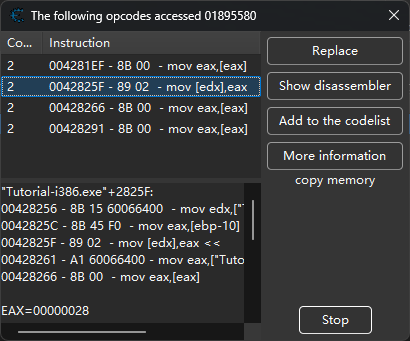
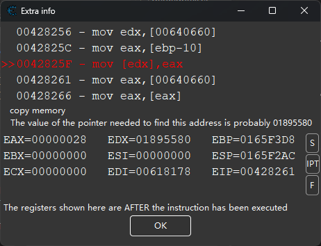
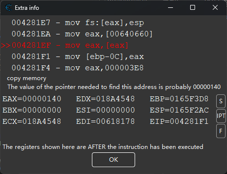
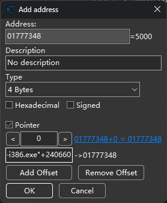
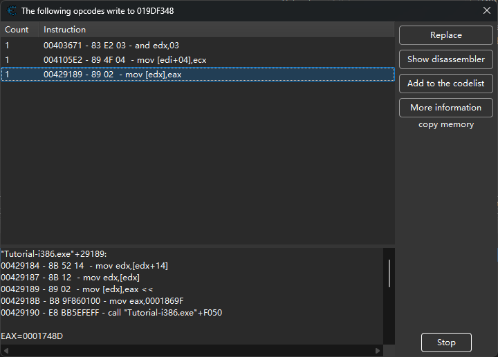
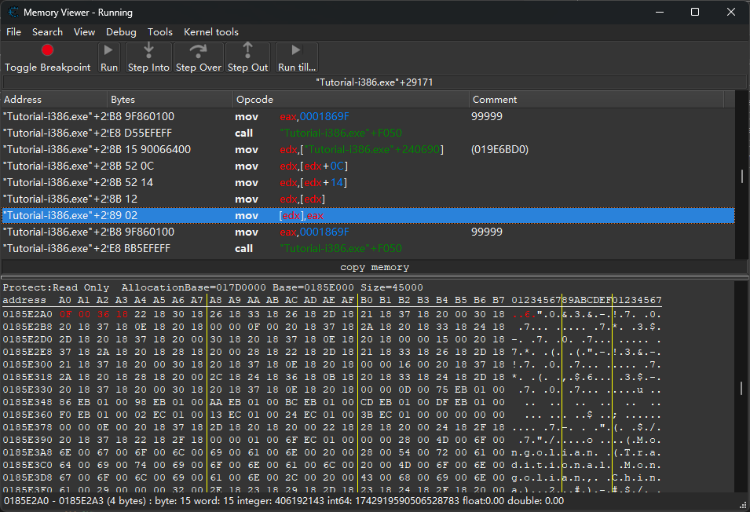
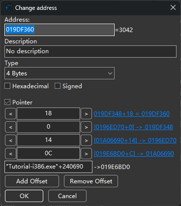

前言 #
本文记录一下学习 Cheat Engine 教程的过程.
关卡 #
第一关 #
Step 1
Welcome to the Cheat Engine Tutorial (v3.6)
This tutorial will teach you the basics of cheating in video games. It will also show you foundational aspects of using Cheat Engine (or CE for short). Follow the steps below to get started.
1: Open Cheat Engine if it currently isn’t running. 2: Click on the “Open Process” icon (it’s the top-left icon with the computer on it, below “File”.). 3: With the Process List window now open, look for this tutorial’s process in the list. It will look something like “00001F98-Tutorial-x86_64.exe” or “0000047C-Tutorial-i386.exe”. (The first 8 numbers/letters will probably be different.) 4: Once you’ve found the process, click on it to select it, then click the “Open” button. (Don’t worry about all the other buttons right now. You can learn about them later if you’re interested.)
Congratulations! If you did everything correctly, the process window should be gone with Cheat Engine now attached to the tutorial (you will see the process name towards the top-center of CE).
Click the “Next” button below to continue, or fill in the password and click the “OK” button to proceed to that step.)
If you’re having problems, simply head over to forum.cheatengine.org, then click on “Tutorials” to view beginner-friendly guides!
第一关主要介绍如何在 CE 中打开程序. 另外可以用后续关卡的 PW 直接跳转到想要继续的关卡.
第二关 #
Step 2
Step 2: Exact Value scanning (PW=090453) Now that you have opened the tutorial with Cheat Engine let’s get on with the next step.
You can see at the bottom of this window is the text Health: xxx Each time you click ‘Hit me’ your health gets decreased.
To get to the next step you have to find this value and change it to 1000
To find the value there are different ways, but I’ll tell you about the easiest, ‘Exact Value’: First make sure value type is set to at least 2-bytes or 4-bytes. 1-byte will also work, but you’ll run into an easy to fix problem when you’ve found the address and want to change it. The 8-byte may perhaps works if the bytes after the address are 0, but I wouldn’t take the bet. Single, double, and the other scans just don’t work, because they store the value in a different way.
When the value type is set correctly, make sure the scantype is set to ‘Exact Value’ Then fill in the number your health is in the value box. And click ‘First Scan’ After a while (if you have an extremely slow pc) the scan is done and the results are shown in the list on the left.
If you find more than 1 address and you don’t know for sure which address it is, click ‘Hit me’, fill in the new health value into the value box, and click ‘Next Scan’ repeat this until you’re sure you’ve found it. (that includes that there’s only 1 address in the list…..)
Now double click the address in the list on the left. This makes the address pop-up in the list at the bottom, showing you the current value. Double click the value, (or select it and press enter), and change the value to 1000.
If everything went ok the Next button should become enabled, and you’re ready for the next step.
Note: If you did anything wrong while scanning, click “New Scan” and repeat the scanning again. Also, try playing around with the value and click ‘Hit me’.
第二关是最简单的应用: 搜索精确数值. 很多游戏的数值都和显示的一样. 关卡中有一个生命值 Health, 每次按 Hit me 就会掉血. 只需要在 Scan Value 框内搜索 Health, 在每次点击变化后再次搜索. 由于本关比较简单, 一次搜索就能找到了(即左边表格上方应该显示 Found:1). 双击左边搜索到的结果, 他会出现在下方的表格里. 再双击其值(Value), 修改为 1000 即可过关.
第三关 #
Step 3
Step 3: Unknown initial value (PW=419482)
Ok, seeing that you’ve figured out how to find a value using exact value let’s move on to the next step.
First things first though. Since you are doing a new scan, you have to click on New Scan first, to start a new scan. (You may think this is straighforward, but you’d be surprised how many people get stuck on that step) I won’t be explaining this step again, so keep this in mind.
Now that you’ve started a new scan, let’s continue.
In the previous test we knew the initial value so we could do an exact value search, but now we have a status bar where we don’t know the starting value.
We only know that the value is between 0 and 500. And each time you click ‘Hit me’ you lose some health. The amount you lose each time is shown above the status bar.
Again there are several different ways to find the value. (like doing a decreased value by… scan), but I’ll only explain the easiest. “Unknown initial value”, and decreased value.
Because you don’t know the value it is right now, exact value wont do any good, so choose as scantype ‘Unknown initial value’, again, the value type is 4-bytes. (Most windows apps use 4-bytes.) Click First scan and wait till it’s done.
When it is done click ‘Hit me’. You’ll lose some of your health. (the amount you lost shows for a few seconds and then disappears, but you don’t need that)
Now go to Cheat Engine, and choose ‘Decreased Value’ and click ‘Next Scan’
When that scan is done, click ‘Hit me’ again, and repeat the above till you only find a few.
We know the value is between 0 and 500, so pick the one that is most likely the address we need, and add it to the list.
Now change the health to 5000, to proceed to the next step.
第三关是要搜索不知道初始值的数值, 比如只能看到长度, 没有刻度的血条. 其方法是用 CE 的 Unknown initial value 选项, 随后在血条减少时不断搜索 Decreased Value, 知道只有一个数值(并且看起来变化符合血条长度). 具体操作之前, 需要先点 New Scan 重置, 在 Scan type 中选上述选项, 这里提示了 value type 是 4-byte, 但是因为我们其实不知道, 所以也可以尝试选 All. 如果选择 Unknown + All, 一开始可能不会显示任何值(因为程序内存里的每一个数据都满足这两个选项), 这是正常的, 继续搜索即可.
接下来按下 Hit me 的时候, 会发现关卡实际上会提示扣血多少. 所以可以更精确地搜 Decreased value by …, 用给出的扣血数额搜索. 大概搜索 4-5 次后, 剩下的数量不多, 可以看到一个 300 多的数值, 因为题目里说知道是 0-500 之间的数, 所以可以确定就是这个了. 继续搜索几次, 只剩下这个数值之后, 就可以改成 5000 了.
第四关 #
Step 4
Step 4: Floating points (PW=890124)
In the previous tutorial we used bytes to scan, but some games store information in so called ‘floating point’ notations.
(probably to prevent simple memory scanners from finding it the easy way)
a floating point is a value with some digits behind the point. (like 5.12 or 11321.1)
Below you see your health and ammo. Both are stored as Floating point notations, but health is stored as a float and ammo is stored as a double.
Click on hit me to lose some health, and on shoot to decrease your ammo with 0.5
You have to set BOTH values to 5000 or higher to proceed.
Exact value scan will work fine here, but you may want to experiment with other types too.
Hint: It is recommended to disable “Fast Scan” for type double
第四关教我们搜索浮点数. 很多游戏里看起来是整数的数值, 其实也存的是浮点数. 我们可以先尝试搜索 4-byte 的 100, Hit me 之后, Health 会变化, 但是再搜索就没有任何结果了. 这说明 Health 不是整型. 再尝试 Float 类型(不要忘记 New Scan), 基本上 Hit me 两下就可以确定是哪个, 于是把它添加到下方表格里.
再尝试搜索 Ammo, 这个时候用 Float 已经搜不到了, 所以尝试用 Double 搜索(注意 CE 提示最好在搜索 Double 类型时关掉 Fast Scan 选项, 当然这里不关也可以搜到). 这里因为我 Hit 过一下, 搜索过后就只有唯一的一个结果, 再 Hit 几次发现确实是同步变化. 所以这样就找到了两个数值, 都改成 5000 即可.
第五关 #
Step 5
Step 5: Code finder (PW=888899)
Sometimes the location of a value is stored at changes, when you restart the game, or even while you’re playing. In that case you can use 2 things to still make a table that works.
In this step I’ll try to describe how to use the Code Finder function.
The value down here will be at a different location each time you start the tutorial, so a normal entry in the address list wouldn’t work.
First try to find the address. (You’ve got to this point so I assume you know how to do that.)
When you’ve found the address, right-click the address in Cheat Engine and choose “Find out what writes to this address”. A window will pop up with an empty list.
Then click on the Change value button in this tutorial, and go back to Cheat Engine. If everything went right, there should be an address with assembler code there now.
Click it and choose the Replace option to replace it with code that does nothing. That will also add the code address to the code list in the Advanced Options window. (Which gets saved if you save your table.)
Click on Stop, so the game will start running normal again, and click on Close to close the window.
Now, click on Change value, and if everything went right the Next button should become enabled.
Note: When you’re freezing the address with a high enough speed it may happen that Next becomes visible anyhow.
第五关是要修改汇编代码. 这一关中, 每次修改值时, 这个值的地址都会随机变化, 所以直接搜索并修改是不行的, 需要找到修改它的地址, 这样再按按钮就不会修改值了(类比到游戏就是把伤害结算部分删掉, 这样即便是受伤也不会掉血了).
搜索的方法是
- 用通常方法找到该值;
- 右键, 在右键菜单中选择 “Find out what writes to this address”, 会出现一个空白的表格页面(右边有一些按钮);
- 再次改变值, 这时新页面里会出现一条记录, 点击可以在下面看到附近的汇编代码
00427D89 - 8B 80 A8040000 - mov eax,[eax+000004A8] 00427D8F - 8B 55 F0 - mov edx,[ebp-10] 00427D92 - 89 10 - mov [eax],edx << 00427D94 - 8B 45 F8 - mov eax,[ebp-08] 00427D97 - 8B 80 A8040000 - mov eax,[eax+000004A8] EAX=018185D8 EBX=00000000 ECX=00000000 EDX=000001FC ESI=00000000 EDI=00618178 EBP=0165F300 ESP=0165F1D4 EIP=00427D94 First seen:11:35:15 Last seen:11:35:15<<这里就是修改的代码, 把eax指向的值改为了edx的值. 可以看到我这里 EDX = 1FC = 508, 与关卡中显示的相同. 那么只需要点击 Replace 输入nop, 把这一行代码改用nop填满即可. 此时再点击 Change value, 就不会发生变化了.
第六关 #
Step 6
Step 6: Pointers: (PW=098712)
In the previous step I explained how to use the Code finder to handle changing locations. But that method alone makes it difficult to find the address to set the values you want.
That’s why there are pointers:
At the bottom you’ll find 2 buttons. One will change the value, and the other changes the value AND the location of the value.
For this step you don’t really need to know assembler, but it helps a lot if you do.
First find the address of the value. When you’ve found it use the function to find out what accesses this address.
Change the value again, and an item will show up in the list. Double click that item. (or select and click on more info) and a new window will open with detailed information on what happened when the instruction ran.
If the assembler instruction doesn’t have anything between a ‘[’ and ‘]’ then use another item in the list.
If it does it will say what it think will be the value of the pointer you need.
Go back to the main cheat engine window (you can keep this extra info window open if you want, but if you close it, remember what is between the ‘[’ and ‘]’ ) and do a 4 byte scan in hexadecimal for the value the extra info told you.
When done scanning it may return 1 or a few hundred addresses. Most of the time the address you need will be the smallest one. Now click on the “Add Address Manually” button and select the pointer checkbox.
The window will change and allow you to type in the address of a pointer and an offset.
Fill in the address you just found. It can be in the form: “Tutorial-i386.exe”+xxxxxx (relative to the process),
or you can double click the address to add it to the address list and use the absolute address which appears there.
If the assembler instruction has a calculation (e.g: [esi+12]) at the end then type the value in that’s at the end above the address field. This is the offset. Otherwise leave it 0. If it was a more complicated instruction look at the following calculation.
Example of a more complicated instruction:
[EAX*2+EDX+00000310] eax=4C and edx=00801234.
In this case EDX would be the value the pointer has, and EAX2+00000310 the offset, so the offset you’d fill in would be 24C+00000310=3A8. (This is all in hex, use calc.exe from Windows in Programmer mode to calculate hex values.)
Back to the tutorial, click OK and the address will be added. If all went right the address will show P->xxxxxxx, with xxxxxxx being the address of the value you found. If that’s not right, you’ve done something wrong.
Now, change the value using the pointer you added in to 5000 and click in the ‘Active’ coloumn to freeze it. Then click Change pointer, and if all went right the Next button will become visible.
extra:
You could also use the pointer scanner to find the pointer to this address. https://cheatengine.org/help/pointer-scan.htm
第五关我们只实现了让按钮失效, 但是不能修改这个值(如果尝试修改, 会发现这个值没有变化). 这一步我们要找到数值的指针.
- 搜索到这个值;
- 右键选 “Find out what accesses this address”, 按 Change Value, 会出现多条指令. 按照教程, 我们需要找其中带有
[]的, 也就是有寻址的.这里四个都有寻址, 而且 1 3 4 是一样的, 所以点开具体分析. - 首先点开 2. 这里的汇编是
这里
00428256 - 8B 15 60066400 - mov edx,["Tutorial-i386.exe"+240660] 0042825C - 8B 45 F0 - mov eax,[ebp-10] 0042825F - 89 02 - mov [edx],eax << 00428261 - A1 60066400 - mov eax,["Tutorial-i386.exe"+240660] 00428266 - 8B 00 - mov eax,[eax] EAX=00000028 EBX=00000000 ECX=00000000 EDX=01895580 ESI=00000000 EDI=00618178 EBP=0165F3D8 ESP=0165F2AC EIP=00428261edx=01895580和我们搜到的地址一样, 所以mov [edx], eax就是把 eax 的值写到我们搜到的位置. 而eax的来源在上一步mov eax, [ebp - 10]. 而ebp应该是函数调用时mov ebp, esp得到的, 即当前函数的栈底. 换句话说, 这里的[ebp - 10]是调用前传入的参数, 所以我们先看另外三个. - 点开 1 3 4, 可以看到三者的汇编都是
00428261 - A1 60066400 - mov eax,["Tutorial-i386.exe"+240660] 00428266 - 8B 00 - mov eax,[eax] <<这里明显看到了相对基址的地址, 所以这, `["Tutorial-i386.exe"+240660]`, 就是我们要找的指针了. 用 Add Address Manually 把这个指针添加到记录中(方法: 选择 Pointer, 并输入 `"Tutorial-i386.exe"+240660`),在下方会出现一个地址为 `P->xxxxxxxx` 的变量, 数值应该和之前搜到的一样. 接下来点击 Change pointer, 那么 `"Tutorial-i386.exe"+240660` 这里存储的值应该会变化(指针改变了), 我们看不到这个指针的值是多少, 但是 CE 下面的表格里已经添加了它指向的值, 也就是说即使指针改变了, 我们还是能修改程序里存储的值. 因此点击 Change pointer 并在三秒内把这个值改成 5000(这一步需要一点手速, 可以把 5000 复制好直接粘贴), 就可以通关了.
注: 如果中途把 “Find out what accesses this address” 关掉了, 再打开可能出现 Change Value 但是没反应的情况. 这是因为程序没有挂载反汇编器. 在最初的添加进程那个对话框里有一个 “Attach debugger to process”, 选中进程再点一下这个就可以了.
第七关 #
Step 7
Step 7: Code Injection: (PW=013370)
Code injection is a technique where you inject a piece of code into the target process, and then reroute the execution of code to go through your own written code.
In this tutorial you’ll have a health value and a button that will decrease your health by 1 each time you click it.
Your task is to use code injection to make the button increase your health by 2 each time it is clicked.
Start with finding the address and then find what writes to it.
Then when you’ve found the code that decreases it browse to that address in the disassembler, and open the auto assembler window (Ctrl+A).
There click on template and then code injection, and give it the address that decreases health (if it isn’t already filled in correctly).
That will generate a basic auto assembler injection framework you can use for your code.
Notice the alloc, that will allocate a block of memory for your code cave, in the past, in the pre windows 2000 systems, people had to find code caves in the memory (regions of memory unused by the game), but that’s luckily a thing of the past since windows 2000, and will these days cause errors when trying to be used, due to SP2 of XP and the NX bit of new CPUs.
Also notice the line newmem: and originalcode: and the text “Place your code here”.
As you guessed it, write your code here that will increase the health with 2.
A useful assembler instruction in this case is the “ADD instruction”.
Here are a few examples:
“ADD [00901234],9” to increase the address at 00901234 with 9
“ADD [ESP+4],9” to increase the address pointed to by ESP+4 with 9
In this case, you’ll have to use the same thing between the brackets as the original code has that decreases your health.
Notice:
It is recommended to delete the line that decreases your health from the original code section, else you’ll have to increase your health with 3 (you increase with 3, the original code decreases with 1, so the end result is increase with 2), which might become confusing. But it’s all up to you and your programming.
Notice 2:
In some games the original code can exist out of multiple instructions, and sometimes, not always, it might happen that a code at another place jumps into your jump instruction end will then cause unknown behavior. If that happens, you should usually look near that instruction and see the jumps and fix it, or perhaps even choose to use a different address to do the code injection from. As long as you’re able to figure out the address to change from inside your injected code.
这一节学习代码注入, 即在程序中插入一段代码, 修改功能. CE 提供了非常方便的代码注入模板. 这一关我们的目标是把扣 1 血的按钮变成加 2 血的. 首先换之前一样找到写入这片内存的代码, 打开 debugger view, 选中这一行(应该是类似 sub dword ptr [ebx+000004A8],01), 按 Ctrl + A 打开 Auto Assemble 对话框. 然后选上面的 Template-Code Injection, CE 会写好跳转的代码
alloc(newmem,2048)
label(returnhere)
label(originalcode)
label(exit)
newmem: //this is allocated memory, you have read,write,execute access
//place your code here
originalcode:
sub dword ptr [ebx+000004A8],01
exit:
jmp returnhere
019C0000:
jmp newmem
nop 2
returnhere:
在 newmem 这里加上 add dword ptr [ebx+000004A8],02, 同时把 originalcode 中原来的代码删掉, 点击对话框的 Execute 即可.
本关还有一种解法, 因为 add 和 sub 的命令长度一样, 所以可以直接替换原来的汇编命令.
第八关 #
Step 8
Step 8: Multilevel pointers: (PW=525927)
This step will explain how to use multi-level pointers.
In step 6 you had a simple level-1 pointer, with the first address found already being the real base address.
This step however is a level-4 pointer. It has a pointer to a pointer to a pointer to a pointer to a pointer to the health.
You basicly do the same as in step 6. Find out what accesses the value, look at the instruction and what probably is the base pointer value, and what is the offset, and already fill that in or write it down. But in this case the address you’ll find will also be a pointer. You just have to find out the pointer to that pointer exactly the same way as you did with the value. Find out what accesses that address you found, look at the assembler instruction, note the probable instruction and offset, and use that.
And continue till you can’t get any further (usually when the base address is a static address, shown up as green.)
Click Change Value to let the tutorial access the health.
If you think you’ve found the pointer path click Change Register. The pointers and value will then change and you’ll have 3 seconds to freeze the address to 5000.
Extra: This problem can also be solved using an auto assembler script, or using the pointer scanner.
Extra2: In some situations it is recommended to change CE’s Codefinder settings to Access violations when encountering instructions like mov eax,[eax] since debug registers show it AFTER it was changed, making it hard to find out the value of the pointer.
Extra3: If you’re still reading. You might notice that when looking at the assembler instructions that the pointer is being read and filled out in the same codeblock (same routine, if you know assembler, look up till the start of the routine). This doesn’t always happen, but can be really useful in finding a pointer when debugging is troublesome.
这一关简单来说, 数据藏在四层指针之下. 我这里用到了一点 Extra3 的信息(或者说是运气好), 因为这四层指针的调用是紧挨着的, 所以一次就可以找到最底层.
-
按过去的方法搜索到显示值的地址(如我这里是
019DF3B0). -
选择 “Find out what accesses this address”. 点击 Change value 变动, 会发现出现一条信息
0042960C - B8 A00F0000 - mov eax,00000FA0 00429611 - E8 3A5AFEFF - call "Tutorial-i386.exe"+F050 00429616 - 89 46 18 - mov [esi+18],eax << 00429619 - 68 FF000000 - push 000000FF 0042961E - 8D 8D FCFEFFFF - lea ecx,[ebp-00000104]可以看出,
esi+18应该就是我们找到的地址, 也就是esi+18 = 019DF3B0, 那么一定有什么地方计算出了esi. 往上看, 会发现代码很复杂, 所以我们直接用 CE 搜索esi的值019DF398(注意搜索时要选 Hex 选项). -
搜索后得到唯一的一个地址(如我这里是
019DF348). 理论上, 这里应该是把四层指针的值写入的地方. 所以选择 “Find out what writes to this address”. 点击 Change pointer, 随后出现了三个条目.根据之前找指针的经验, 我们希望看到
mov xxx, [xxx]的形式, 检查三个结果, 发现第三个结果里面是00429184 - 8B 52 14 - mov edx,[edx+14] 00429187 - 8B 12 - mov edx,[edx] 00429189 - 89 02 - mov [edx],eax << 0042918B - B8 9F860100 - mov eax,0001869F 00429190 - E8 BB5EFEFF - call "Tutorial-i386.exe"+F050可以看到上面有一串的
mov edx, [edx+xxx]. 点开 disassembler 界面, 会看到正好有四层指针mov edx,["Tutorial-i386.exe"+240690]这一句是开始, 所以我们添加一个四层指针注意四层指针指向的是
esi, 最后还要偏移0x18个单位, 不要忘记了. 添加之后修改为 5000 并锁住, 再点击 Change pointer 即可.
理论上来说这个题目应该搜索好几次. 我后面尝试了一下, 如果在第二步搜的不是 esi 而是 esi+18, 或者按 Change value 来搜, 就会进入正常的流程, 需要一层一层搜索. 我这里应该是取巧了. 不过最终做出来就好.
第九关 #
Step 9
Step 9: Shared code: (PW=31337157)
This step will explain how to deal with code that is used for other object of the same type
Often when you’ve found health of a unit or your own player, you will find that if you remove the code, it affects enemies as well.
In these cases you must find out how to distinguish between your and the enemies objects.
Sometimes this is as easy as checking the first 4 bytes (Function pointer table) which often point to a unique location for the player, and sometimes it’s a team number, or a pointer to a pointer to a pointer to a pointer to a pointer to a playername. It all depends on the complexity of the game, and your luck
The easiest method is finding what addresses the code you found writes to and then use the dissect data feature to compare against two structures. (Your unit(s)/player and the enemies) And then see if you can find out a way to distinguish between them.
When you have found out how to distinguish between you and the computer you can inject an assembler script that checks for the condition and then either do not execute the code or do something else. (One hit kills for example)
Alternatively, you can also use this to build a so called “Array of byte” string which you can use to search which will result in a list of all your or the enemies players
In this tutorial I have implemented the most amazing game you will ever play.
It has 4 players. 2 Players belong to your team, and 2 Players belong to the computer.
Your task is to find the code that writes the health and make it so you win the game WITHOUT freezing your health
To continue, press “Restart game and autoplay” to test that your code is correct
Tip: Health is a float
Tip2: There are multiple solutions
这一关就是使用之前学到的技能, 通关这个不可能的游戏. 这个游戏左边的两个人是我方, 右边是敌方. 我方对敌方只能造成 1 点伤害, 敌方可以对我方造成更高的伤害. 我方初始生命为 100, 敌方为 500. 游戏提供的四个 Attack 按钮供玩家测试. 目标是按下面的自动战斗后获得胜利.
这个关卡的通关方法显然不唯一, 这里简要说明一下我做的过程和注意点.
- 用上面的 Attack 搜索到四个生命值, 然后 Find … write … 找到写入的函数. 我们会看到写入之前是将伤害放入
edx, 然后把生命指针传给eax, 再调用一个函数来处理. 因为这个函数是共用的, 所以不能直接修改它. - 我的思路就是, 让己方的伤害变为 0, 让敌方的伤害变为 100, 这样就可以打过了. 方法既可以是直接修改汇编指令, 或者使用第七关中学到的代码注入来修改(我用了这个, 比较方便).
- 这里有一个细节, 就是下面自动战斗和上面 Attack 计算伤害的代码是不一样的. 所以改了 Attack 还是会失败. 所以我们需要再 Find … write 一次, 但这次选择自动战斗, 然后按第二步再改一次就可以了.
通关后 #
全部通关后会自动打开一个有画面的游戏, 里面有三关, 同样需要通过 CE 才能通关. 但是这三关的难度比前面还要低(因为数值很好搜). 可能需要特殊提的是第三关, 这一关我的通关方法是
- 搜索到角色所在的坐标, 是两个浮点数.
- 用 Find … write … 找到修改纵向坐标的自由落体代码, 然后使之无效化, 这样就不会自动下落了(否则即使锁住纵坐标, 还是会下落)
- 通过手动修改坐标的方法到达想到的点. 这个平台不用踩上去才会变绿色, 只要处在其上方一定范围内即可, 所以不用特别精确.